Homesteading In Canada
Fourteen kinds of foraged fare from the B.C. Provincial Museum: Edible Mussel, Ostrich Fern, Sword Fern, Brachen Fern, Mountain Bilberry, Red Huckleberry, Salmonberry, Blackberries, The Junipers, Clover, Plaintain, Wester Yellow Pine, Lodgepole Pine, and Fireweed.
By the Mother Earth News editors
September/October 1970
WILD FOODS OF BRITISH COLUMBIA
Tom Marshall mentioned in the preceeding article.
ADAM F. SZCZAWINSKI, GEORGE A. HARDY AND D. B. QUAYLE
ILLUSTRATIONS BY FRANK L. BEEBE
FAMILY MYTILID Æ
Shells equivalve, inequilaterial. Anterior muscle scars small, posterior impression large. Ligament long, narrow, in a groove. No hinge teeth. Well-developed byssus.
Mytilus edulis Linnæus
Description. - Shell small , to 2 inches in length. Shape elongate, anterior end pointed, posterior rounded. Externally quite smooth with fine concentric sculpture. Black, blue, or brown periostracum, but usually blue where worn off. Internally, dull blue in colour. Umbones terminal. Hinge ligament both internal and external.
Distribution. - Arctic Ocean to California. In Atlantic also. British Columbia: Generally distributed; Ladysmith, Victoria, Comox (Vancouver Island), Queen Charlotte Islands.
Habitat. - Occurs in dense patches in the intertidal zone attached to rock or gravel by strong byssal threads; also on piling and floats.
Notes. - This is the same species that is marketed extensively in Europe for food. Culturing the species here to grow it to a larger size as is done in Europe would probably make it acceptable to the market here also. Mussels are quite edible; it may be the many myths indicating them to be poisonous in some situations that prevent this species being used more. Actually there is no danger if the mussels are used fresh from waters uncontaminated by sewage. In Pacific-oyster-growing areas this species may be parasitized by the copepod Mytilicola orientalis, which lives in the intestinal tract of the mussel. However, this parasite is not dangerous to humans. The breeding season of Mytilus is quite long; in Ladysmith Harbour the larvæ may be found from May to December, but the main breeding period is during the warm months. Dense masses of mussels form an excellent home for many species of small marine animals.
Ostrich Fern
Matteuccia struthiopteris
Description. - Rootstock (rhizome) deeply subterranean, black, much branched. Sterile fronds in a circle and in vase-like arrangement, tall and plume-like in appearance, up to 6 feet tall. Young unrolled frond thick, succulent, and tender. Fertile (fruiting) fronds stiffly erect inside the circle of sterile fronds, resembling thick dark-brown feathers.
Habitat and Occurrence. - Woods rich in humus, alluvial soils, edges of swamps, and fertile wet slopes. Locally common from Hazelton to Giscome and south to Quesnel; between Lumby and Revelstoke; Liard River on the Alaska Highway; and lower Fraser Valley between Agassiz and Hope.
Food Uses and Comments. - The young unrolled fronds are used as a substitute for asparagus or string beans. Remove the dry, papery scales from the tightly coiled, leafy tips and bases of the stock and wash carefully. Season with salt and boil or steam until tender. Serve as a vegetable or on toast.
In the more remote northern areas, where there is a shortage of fresh vegetables in winter, rootstocks can be brought into the cellar in autumn, covered with sand or earth, and forced for winter use. There are also possibilities of canning ostrich fern, a product known in many markets.
Ostrich fern is not generally distributed throughout our Province, but when it does occur it is very abundant, and should be utilized as a choice vegetable. In literature this species is often found under synonyms such as Onoclea struthiopteris and Pteretis nodulosa.
Other Ferns. - A few other ferns are tender enough to be used as emergency food, but some of these arc bitter and unpalatable, and as there is usually an abundance of bracken, sword fern, and ostrich fern, there is seldom need to utilize the inferior species.
Caution. - No one who is not absolutely sure that he knows a true fern from other delicately cut-leaf plants should try to eat them. Some plants, such as poison hemlock, have leaves that, to the untrained eye, could easily be confused with fern fronds.
Sword Fern
Other Common Name. - Western sword fern.
Description. - Fronds stiff, erect, forming a crown deriving from a stout, woody rootstock (rhizome), covered with reddish-brown scales, up to 5 feet in length. Frond divisions lance-shaped, with sharply toothed margins.
Habitat and Occurrence. - In clumps in damp, shady, coniferous woods and shaded slopes. Common throughout the Coastal region.
Food Uses and Comments. - The only part utilized as food is the stout rootstock, which should be roasted. It is said to be both tasty and nutritious.
Since it is widely spread and common in the Coastal region, the sword fern is a valuable source of food in an emergency.
Bracken Fern
Other Common Names. - Brake fern, eagle fern, pasture-brake.
Description. - Coarse fern from long underground rootstock (rhizome). Frond distinctly 3-forked, broadly triangular in outline with numerous, oblong to linear divisions. The mature spores give a brown, velvety appearance on the under-surface.
Habitat and Occurrence. - Dry open woods, pastures, and clearings. Generally throughout the Province except at higher altitudes; reaches its best development in the Coastal forests.
Food Uses and Comments. - The rootstock may be roasted, peeled, and powdered; the inner starchy substance may then be eaten or ground and used as flour. The young unfolding stems may be used as a cooked vegetable; to many people they taste like asparagus. Pick the stems when they are about 4 to 10 inches high, remove the brown wool-like covering, wash, and boil in salted water.
The bracken is most widely known and is the commonest of our ferns, but very few people realize its use as a vegetable, especially early in the spring, when cultivated vegetables are scarce.
Mountain Bilberry
Other Common Names. - Twin-leaved huckleberry, blue huckleberry, mountain huckleberry.
Description. - A densely branched, erect, coarse shrub, up to 6 feet tall, with greyish shredding bark on old branches. Leaves, ovate to oblong, pointed, sharply toothed, and paler on the lower surface. Flowers creamy-pink, single, in the axils of leaves. Fruit a purplish-black berry without a bloom.
Habitat and Occurrence. - Mountain-slopes, open coniferous forest throughout the Province; most abundant in the southeast Interior.
Food Uses and Comments. - The fruit can be eaten raw or, used in many ways for preserving. It has a good flavour and is quite large in size. A very refreshing cold beverage can be made from the diluted, sweetened juice, and the dried berries are excellent for making hot drinks.
Red Huckleberry
Other Common Name. - Red bilberry.
Description. - Erect shrub with green stems prominently angled, up to 12 feet tall. Mature leaves deciduous, thin, oval to oblong-elliptic, not toothed; juvenile leaves persistent, leathery, finely toothed. Flowers pink, in the axils of the leaves. Fruit a globose, bright-red berry.
Habitat and Occurrence. - Open coniferous woods in the Coastal area.
Food Uses and Comments. - The berries are a well-known article of food, very delicious and refreshing whichever way thcy are prepared. They may be eaten raw, or in pies, jellies, etc., rind have commercial possibilities.
Salmonberry
Description. - Erect, thicket-forming shrub. Stems armed with weak prickles below and unarmed above, with brown bark. Leaves not hairy, usually 3-foliate. Flowers solitary, pinkish to red and showy. Fruit easily separated from receptacle, raspberry-like, yellow-orange to reddish.
Habitat and Occurrence. - Moist woods, swamps, lowlands, stream-banks and mountain-slopes. Particularly abundant in the area west of the Coastal mountains.
Food Uses. - Similar to those of the blackberries.
The Junipers
Description. - Junipers are evergreen shrubs or shrubby trees with compact branches, thin shreddy bark, and scale-like leaves. The leaves are pressed closely to the twigs, and may be sharp or blunt. The fruit is a fleshy, dark blue, bloom-covered, berry-like cone the size of a pea with a peculiar sweet resinous taste. These "berries" are borne in large numbers on shoots of the female tree and usually remain all winter.
Habitat and Occurrence. - Usually on exposed dry slopes and rocky ridges. Widely distributed in the Province, being most abundant in the southeast.
Food Uses and Comments. - The fruit is well known as an essential ingredient for flavouring gin and other cordials. Occasionally the berries are dried and ground and used in the preparation of a mush or cake.
Blackberries
There are a number of shrubs commonly called blackberries as they produce a black fruit well known to everyone. As the blackberries are so closely related and in habit are so similar, there is no point in discussing each one individually. Blackberries and raspberries belong to the Rose Family ( Rosaceæ ), and it is the fruit-growers who separate them according to the colour of the fruit.
A number of blackberries occur throughout our Province, each one varying to a certain degree from the other. All have trailing stems, armed with sharp thorns, alternate leaves, deciduous or persistent, white or pinkish showy flowers, and dark-purple to black juicy fruit which is an aggregation of weakly connected drupelets.
The species illustrated is Rubus ursinus, our native blackberry, which has a fruit of excellent favour and is the source of several horticultural varieties, such as loganberry, boysenberry, and many other strains.
Clover
Description. - Low perennial plant, leaves consisting of 3 leaflets. Flowers in dense head, white, pink, or red.
Habitat and Occurrence. - Meadows and bluffs everywhere.
Food Uses and Comments. - The roots are said to be sweet and pleasant. They may be partially dried and smoked, or rolled and dipped in oil. The leaves were used by Indians as a salad.
Plantain
Description. - Low perennial plant. Leaves broadly elliptical, strongly ribbed. Flowers in long, compact, elongated clusters; individual flowers very small, greenish.
Habitat and Occurrence. - Dry roadsides, fields and waste places everywhere.
Food Uses and Comments. - The leaves were formerly used as a pot herb and as a green vegetable. As this plant has tough fibres, most people would consider its use only in an emergency. Two large handfuls of the leaves infused for several hours in one quart of boiling water may be used in place of tea.
Lodgepole Pine
Other Common Names. - Jack pine, western jack pine, scrub pine.
Description. - Leaves needle-like in bundles of 2, 1 to 3 inches long, yellow or dark green. Cones rather small, egg-shaped, 1 to 2 inches long, often borne in clusters. The scales thickened and armed with slender prickles; often remain on the tree for a number of years.
Habitat and Occurrence. - Adapted to a wide range of sites and likely to be found almost any place in our Province.
Food Uses and Comments. - In the spring the juicy inner bark (cambium) can be eaten fresh or dried and used as an emergency food, or processed and stored for winter use. The nuts (seeds) are edible, but due to their small size are of no special consequence.
Western Yellow Pine
Other Common Names. - Ponderosa pine, yellow pine, British Columbia pine.
Description. - Leaves needle-like in bundles commonly of 3, rarely in 4 or 5; dark yellow-green, to 10 inches in length. Cones short stalked, reddish-brown with thickened scales and sharp prickles, up to 6 inches long.
Habitat and Occurrence. - In the dry belt zone of the Interior, occurring in open park-like stands. Confined to the drier portion of the southern Interior. It grows on dry, well-drained, exposed southerly slopes or plateaux up to elevations of 3,000 feet.
Food Uses and Comments. - The seeds are said to be pleasant to the taste and similar to those of lodgepole pine. They may also be crushed or ground and then made into a bread or biscuit with the addition of sunflower seeds.
This, the largest species of pine in our Province, ordinarily attains a height of about 80 feet and occasionally 160 feet or more.
Fireweed
Other Common Names. - Great willow herb.
Description. - Perennial plant, up to 6 feet tall. Leaves lanceolate, resembling those of willow. Flowers showy, pink to purple in terminal, spike-like cluster.
Habitat and Occurrence. - Logged forests, burned-over areas, moist banks, roadsides throughout the Province.
Food Uses and Comments. - The young leaves can be used as greens. The stalk, when split open, exposes a sweet glutinous substance, which is said to be quite palatable. The dried leaves may be used to make a beverage.
All illustrations and copy for this article are from GUIDE TO COMMON EDIBLE PLANTS OF BRITISH COLUMBIA, Handbook No. 20 of the British Columbia Provincial Museum, Victoria, British Columbia, Canada. Copies of the handbook are available 1$0.50 postpaid) from the Museum.
 Edible Mussel, Blue Mussel, Bay Mussel |
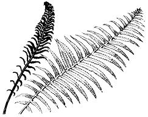 Polysticum munitum |
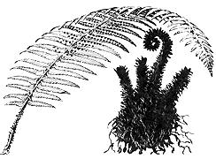 Pteridium aquilinum |
|
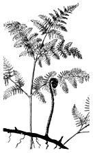 Vaccinium membranaceum |
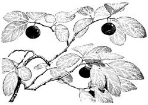 Vaccinium parvifolium |
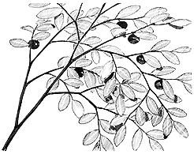 Rubus spectabilis |
|
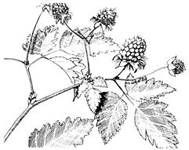 Juniperus species |
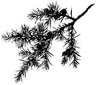 Rubus species |
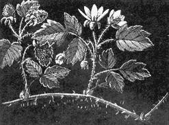 Trifolium species |
|
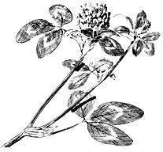 Plantago major |
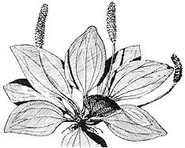 Pinus contorta |
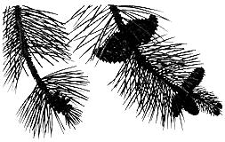 Pinus ponderosa |
|
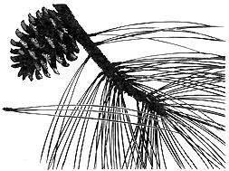 Epilobium angustifolium |
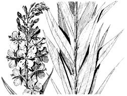 |
|